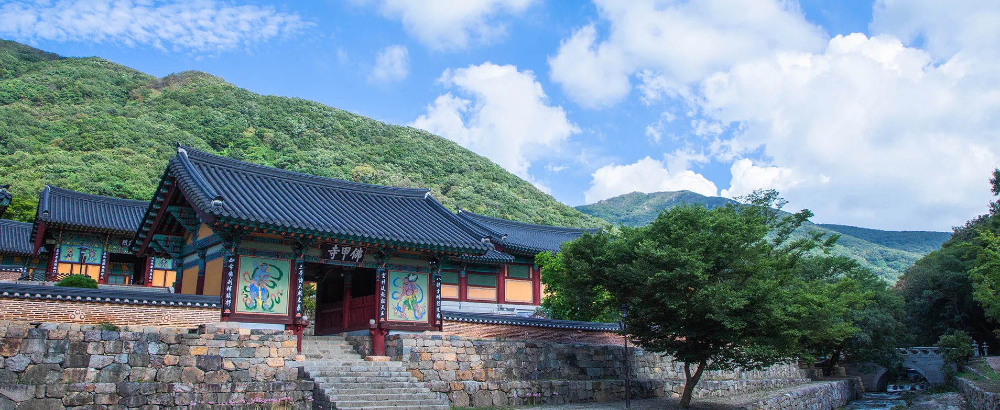
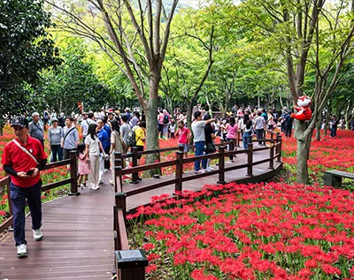
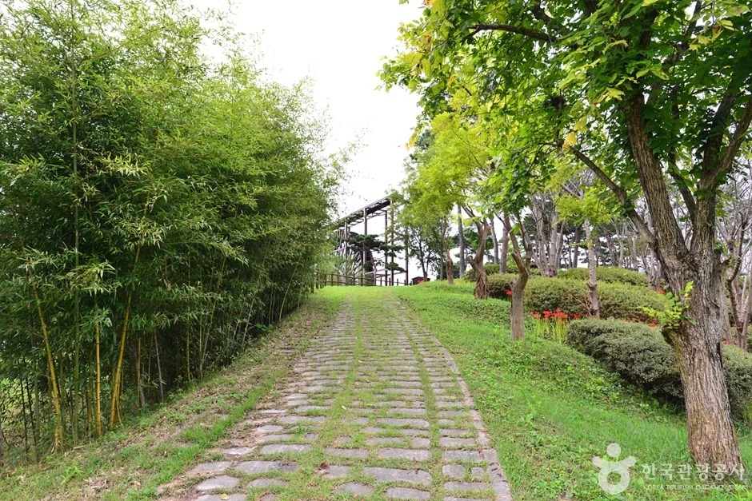
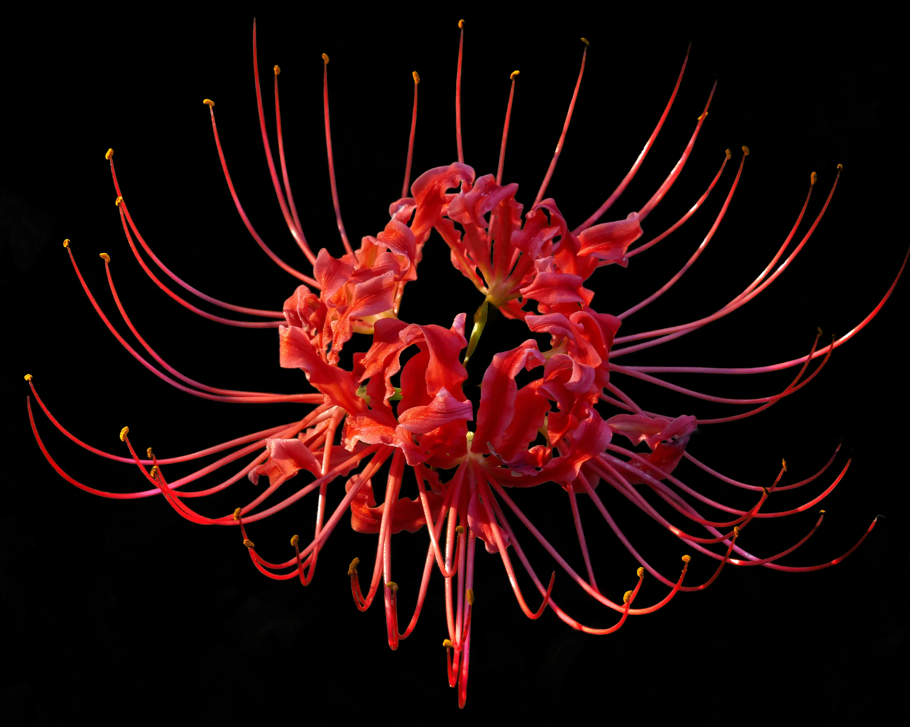
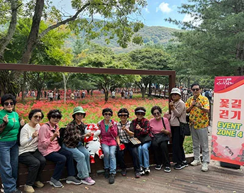
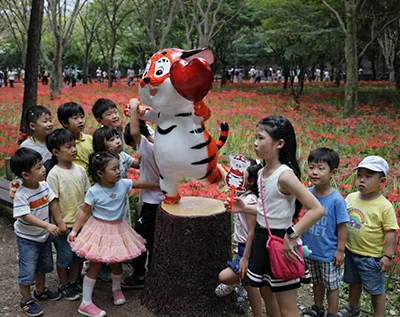
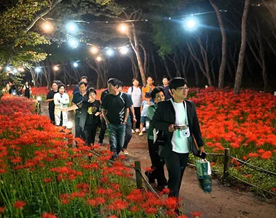
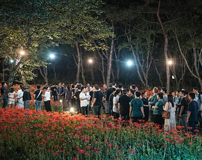
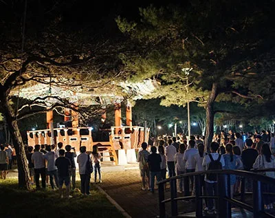
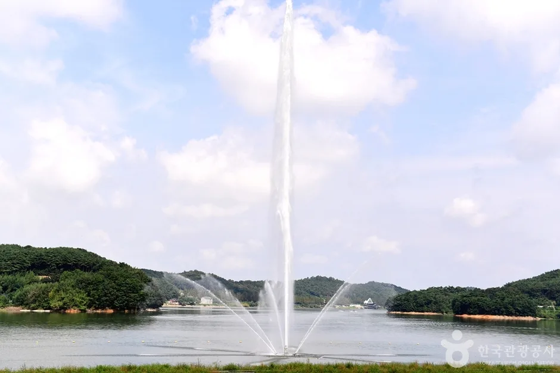

▲ 전남 영광군 불갑면 불갑사 대웅전. 불갑산 자락에 안긴 천년고찰로, 매년 9월이면 경내 주변이 붉은 꽃무릇으로 물든다 사진=영광군청 문화관광 공식 홈페이지
9월 중순, 전남 영광 불갑산 자락이 붉게 물들기 시작한다. 불갑사를 감싼 동백골 숲길을 따라 꽃무릇 수백만 송이가 한꺼번에 피어나는 시기다. 제26회 영광불갑산상사화축제가 9월 18일부터 27일까지 열흘간 불갑사 관광지 일원에서 열리고, 입장료는 무료다.
다만 이 사이트가 항상 강조하듯, 꽃 구경의 실패는 대부분 꽃이 아니라 차와 동선에서 갈린다. 이번 기사는 소개 위주 정보 나열 대신, 실제 방문객이 겪는 순서 — 주차장 도착 → 도보 진입 → 경내 → 동백골 군락지 → 야간 프로그램(있는 날) → 귀가 — 그대로 따라가며 자동차로 방문할 때 알아야 할 것들을 짚는다.
1. 주차장 도착 — 무료지만, 정오 넘기면 대열에 합류한다

▲ 축제 기간 낮 시간대 불갑사 관광지 목재 산책로. 꽃무릇이 절정에 오르면 평일 낮에도 발걸음이 끊이지 않는다 사진=영광군청 문화관광 공식 홈페이지
불갑사 관광지 주차장은 연중 무료로 운영된다. 문제는 요금이 아니라 자리다. 공식 정보 기준으로 입장료와 주차 모두 무료지만, 축제 기간 주말에는 진입로부터 차량이 길게 늘어서는 상황이 반복된다고 축제 관련 보도가 전한다. 평일이라도 개화 절정기와 겹치면 오전 중 주차장이 채워질 수 있어, 오전 10시 전후 도착을 목표로 잡는 편이 안전하다. 장애인 주차구역은 사찰 입구까지 도보 약 3분 거리에 마련돼 있어, 거동이 불편한 가족을 동반한다면 이 구역을 우선 확인하는 것이 좋다.

▲ 불갑사 관광지 인근 영광불갑테마공원의 대나무숲 산책로. 주차장에서 경내로 걸어 들어가는 구간 곳곳에 이런 숲길 산책 코스가 함께 조성돼 있다 ⓒ 한국관광공사
2. 도보 진입 — 매표소는 없고, 걷는 시간만 있다
불갑사는 상시 무료 개방 사찰이라 별도 매표소를 거치지 않는다. 주차장에서 내리면 바로 관광지 초입 산책로가 시작되고, 완만한 보드워크를 따라 5분 안팎이면 불갑사 일주문 권역에 닿는다. 코스 자체는 계단이나 급경사가 거의 없어 유모차나 휠체어로도 큰 무리 없이 접근할 수 있다는 점이 다른 산사(山寺) 코스와 비교했을 때 강점이다.
3. 불갑사 경내 — 잠깐 들렀다 갈 곳이 아니다

▲ 꽃무릇(석산, Lycoris radiata)의 꽃 구조. 잎이 진 자리에서 꽃대만 올라와 피기 때문에 '잎과 꽃이 만나지 못한다'는 뜻의 상사화(相思花) 이미지로도 함께 불린다 사진=Wikimedia Commons
불갑사는 백제에 불교를 처음 전한 인도 승려 마라난타가 세운 사찰로 전해지며, 대웅전과 천왕문을 포함해 보물 5건을 한곳에서 볼 수 있다. 경내 뒤편에는 수령 약 700년의 참식나무 자생지가 천연기념물 제112호로 지정돼 있어, 꽃만 보고 지나치기엔 아까운 볼거리가 많다. 경내를 둘러보는 데는 넉넉히 20~30분 정도를 배정해두면 무리가 없다. 상세 문화재 정보는 영광군청 문화관광 홈페이지에서 확인 가능하다.

▲ 불갑사 천왕문. 사천왕을 모신 문으로, 축제 기간에는 이 앞까지 형형색색의 연등이 함께 걸린다 ⓒ 한국관광공사
4. 동백골 군락지 — 여기가 진짜 목적지다

▲ 동백골 초입 포토존. 꽃무릇이 가장 밀집한 구간은 불갑사에서 멀지 않은 초입 쪽에 몰려 있다 사진=영광군청 문화관광 공식 홈페이지
| 구간 | 거리 | 소요 시간 | 비고 |
|---|---|---|---|
| 주차장 → 불갑사 | 약 300~400m | 도보 3~5분 | 평지, 계단 거의 없음 |
| 불갑사 → 동백골 → 해불암 | 왕복 약 4.5km | 약 1시간 30분 | 꽃무릇 핵심 구간 포함, 전 연령 무난 |
| 불갑사 → 연실봉 정상 | 왕복 약 7.3km | 약 3~4시간 | 등산 코스, 일반 관람객에겐 불필요 |
꽃무릇만 보는 게 목적이라면 정상까지 오를 필요는 없다. 주차장~불갑사~동백골 구간만 다녀와도 축제의 핵심은 대부분 담을 수 있다는 것이 현지 여행 정보의 공통된 조언이다. 동백골 숲길은 편도 기준으로도 붉은 군락이 끊이지 않고 이어지며, 해불암까지 왕복해도 1시간 30분 안팎이면 충분하다. 반대로 연실봉 정상까지 가는 코스는 왕복 7.3km, 3~4시간이 걸리는 본격 등산로라 가벼운 신발이나 아이 동반 방문객에게는 권하기 어렵다.
5. 가족 단위라면 — 체험존이 동선 중간에 있다

▲ 동백골 산책로 중간에 마련된 체험·포토존. 아이 동반 가족은 이 구간에서 예상보다 오래 머무르게 된다 사진=영광군청 문화관광 공식 홈페이지
축제 기간에는 상사화 꽃길 걷기 외에도 사찰음식 체험, 천연염색, 마스코트 포토존 같은 체험 프로그램이 동선 중간중간에 배치된다. 아이를 동반한 가족이라면 이런 구간에서 대기·체험 시간이 추가로 붙는다는 점을 감안해, 순수 이동 시간(약 2시간 내외)에 30분~1시간 여유를 더 잡고 일정을 짜는 것이 현실적이다.
6. 야간 프로그램이 있는 날 — 동선이 완전히 달라진다

▲ 야간 프로그램 기간 조명이 켜진 산책로. 낮과는 다른 인파 흐름이 형성된다 사진=영광군청 문화관광 공식 홈페이지

▲ 달빛야행·미디어파사드 등 야간 프로그램이 진행되는 시간대의 동백골 군락지 사진=영광군청 문화관광 공식 홈페이지
축제 기간 전체 운영시간은 오전 10시부터 오후 9시까지로 공지돼 있으며, 상사화 꽃길걷기 외에 '상사호 in Love' 콘서트, 상사화 미디어파사드, 상사화 달빛야행 같은 야간 프로그램이 함께 열린다. 특히 9월 24일부터 26일까지 사흘간은 저녁 7시 30분부터 축제장에서 영화를 상영하는 '사랑이 피는 밤, 상사화 시네마'가 매일 진행될 예정이어서, 이 날짜에 방문한다면 귀가 시간이 밤 시간대로 넘어간다는 점을 미리 감안해야 한다. 다만 불갑사는 평소 오후 6시 이후로는 이용이 제한적으로 운영되는 만큼, 야간 프로그램이 없는 평일에는 오전~이른 오후 방문이 안전하다. 반대로 야간 프로그램이 예정된 날짜에는 해 진 뒤 조명 구간을 둘러보고 나오는 동선이 되므로, 저녁 귀가 시간이 자연히 늦춰진다는 점을 염두에 두고 다음 날 일정을 조정하는 것이 좋다. 정확한 야간 프로그램 날짜는 방문 전 다시 확인하는 것이 안전하다. 축제 공식 홈페이지에서 확인 가능
7. 귀가 동선 — 선운사보다 나은 점, 못한 점

▲ 야간 프로그램 시작 전 불갑사 입구에 모여든 인파. 행사 시작·종료 시간대에 진입로 정체가 집중된다 사진=영광군청 문화관광 공식 홈페이지
꽃무릇 3대 군락지로는 흔히 영광 불갑사, 고창 선운사, 함평 용천사가 꼽힌다. 이 중 선운사는 입구부터 도솔암까지 군락지가 길게 이어지는 대형 코스로 알려져 있고, 그만큼 인지도와 방문 수요도 높은 편이다. 불갑사는 상대적으로 코스가 짧고 동백골 구간에 군락이 집중돼 있어, 짧은 시간 안에 핵심만 보고 나오기에 유리하다는 차이가 있다. 다만 인지도가 낮다는 건 어디까지나 상대적인 이야기고, 축제 기간 주말에는 불갑사 역시 진입로 정체를 피하기 어렵다. 결국 어느 쪽이든 평일 오전 방문이 가장 확실한 정체 회피법이라는 결론은 같다.

▲ 불갑사 관광지에서 차로 10분 내외 거리에 있는 불갑저수지 수변공원. 꽃무릇 구경을 마치고 귀가 전 잠시 들러 쉬어 가기 좋은 인근 스팟이다 ⓒ 한국관광공사
귀가 동선을 짤 때 참고할 만한 곳으로 불갑저수지 수변공원도 있다. 불갑사 관광지에서 차로 10분 안팎 거리에 있어, 축제장을 빠져나오는 정체 구간을 살짝 피해 시간을 흘려보내기에 알맞다. 분수와 호수 둘레길이 조성돼 있어 아이들과 함께라면 짧게 들렀다 가는 동선으로도 부담이 없다.
8. 정리 — 이 순서만 기억하면 된다
체크포인트
- 주차·입장 모두 무료지만, 주말·절정기에는 오전 10시 전 도착이 안전하다.
- 꽃무릇만 볼 목적이면 주차장 → 불갑사 → 동백골(왕복 4.5km·1시간 30분)이면 충분하다.
- 연실봉 정상 코스(왕복 7.3km·3~4시간)는 꽃 감상에는 불필요하다.
- 가족 단위는 체험존 대기 시간을 감안해 30분~1시간 여유를 더 두자.
- 야간 프로그램이 없는 날은 오후 6시 이후 이용이 제한적이니 이른 오후 귀가 동선을 짜두자.